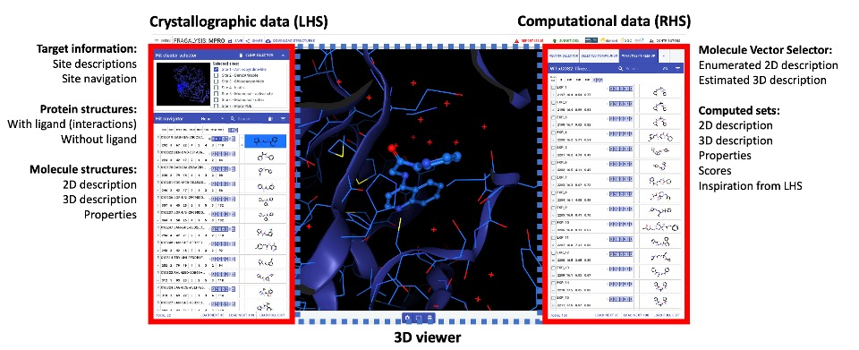

Introduction¶
The fragalysis-backend codebase (https://github.com/xchem/fragalysis-backend) contains the python code used on the back-end of fragalysis (https://fragalysis.diamond.ac.uk) and controls:
Models - the database table definitions for the postgres database that serves fragalysis data
Views - the Django Rest Framework views that handle which data can be served to either the front-end or a user, and how it is served to them
Media - serving of files via views and nginx (see https://docs.djangoproject.com/en/3.1/howto/static-files/deployment/#serving-static-files-from-a-dedicated-server)
Tasks - some tasks for uploading files via a user-facing page
Templates - some templates to allow users to upload certain files
If you understand all of the concepts briefly mentioned here, you may want to go ahead and setup your developer stack
For Newbies¶
If you are unfamiliar with django or RESTful APIs, and are hoping to develop fragalysis backend, we recommend that you start by familiarising yourself with the following:
- Django:
- Model, View, Controller software design pattern:
wiki: https://en.wikipedia.org/wiki/Model–view–controller
tutorial: https://blog.codinghorror.com/understanding-model-view-controller/
- RESTful APIs:
wiki: https://en.wikipedia.org/wiki/Representational_state_transfer
restfulapi.net: https://restfulapi.net
Django Rest Framework: https://www.django-rest-framework.org
Once you feel like you understand these concepts, a good thing to do is setup your developer stack
Context¶
This section aims to briefly describe the context of the back-end code in terms of the data serverd to the front-end application.
The image below shows a target page from fragalysis (https://fragalysis.diamond.ac.uk/viewer/react/preview/target/Mpro) and highlights it’s 3 main functions:
Serving crystallographic data
Allowing a user to navigate the data in 3D
Serving 2D and 3D information relating to new molecule designs
The image also highlights some of the data-types associated with these functionalities
This data is all contained within a number of database tables in the backend codebase, defined by django Models; and served to the frontend via. RESTful endpoints, defined through Django and Django Rest Framework Views.
Although it could, the backend does not directly handle the loading (upload of data to fragalysis server and processing to put into database) of most data - this is done by the loader (https://github.com/xchem/fragalysis-loader).
The rest of the documentation attempts to present code-level documentation and tutorials to the developer within the context described here.
- Crystallographic data:
links
- Computed data:
links
- API (Restful) - data
links
- Serving media - files
links
The Stack¶
The fragalysis stack is very intentionally split up into many components, each with its own codebase. This documentation only covers the backend, as described in the introduction.